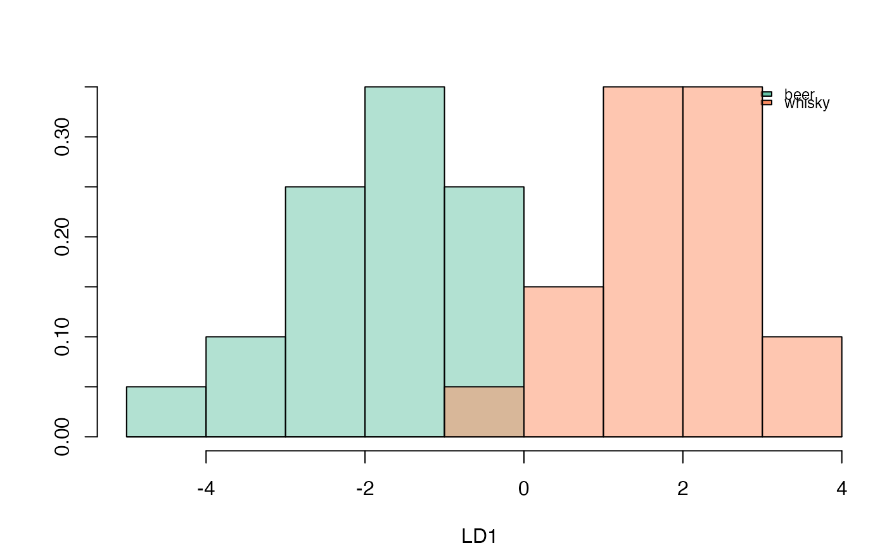
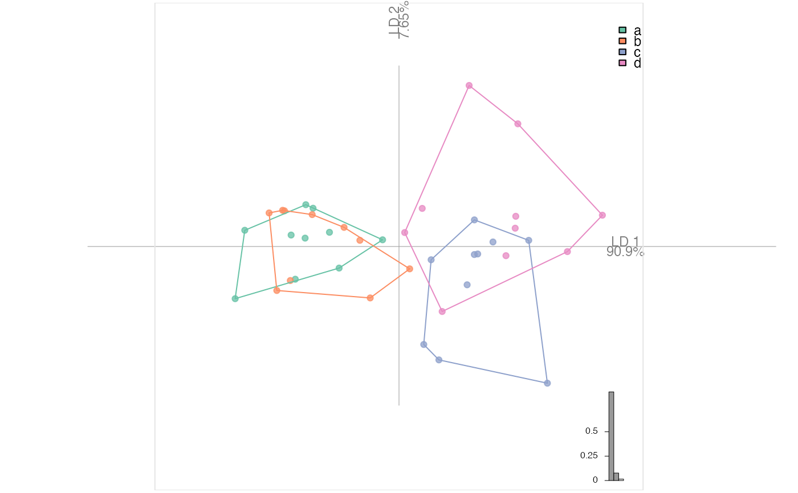

LDA(x, fac, retain, ...) # S3 method for default LDA(x, fac, retain, ...) # S3 method for PCA LDA(x, fac, retain = 0.99, ...)
| x | a Coe or a PCA object |
|---|---|
| fac | the grouping factor (names of one of the $fac column or column id) |
| retain | the proportion of the total variance to retain (if retain<1) using scree, or the number of PC axis (if retain>1). |
| ... | additional arguments to feed lda |
a 'LDA' object on which to apply plot.LDA, which is a list with components:
x any Coe object (or a matrix)
fac grouping factor used
removed ids of columns in the original matrix that have been removed since constant (if any)
mod the raw lda mod from lda
mod.pred the predicted model using x and mod
CV.fac cross-validated classification
CV.tab cross-validation tabke
CV.correct proportion of correctly classified individuals
CV.ce class error
LDs unstandardized LD scores see Claude (2008)
mshape mean values of coefficients in the original matrix
method inherited from the Coe object (if any)
For LDA.PCA, retain can be passed as a vector (eg: 1:5, and retain=1, retain=2, ..., retain=5) will be tried, or as "best" (same as before but retain=1:number_of_pc_axes is used).
Silent message and progress bars (if any) with options("verbose"=FALSE).
Other multivariate:
CLUST(),
KMEANS(),
KMEDOIDS(),
MANOVA_PW(),
MANOVA(),
MDS(),
MSHAPES(),
NMDS(),
PCA(),
classification_metrics()
#>#>#> * Cross-validation table ($CV.tab): #> classified #> actual beer whisky #> beer 17 3 #> whisky 1 19 #> #> * Class accuracy ($CV.ce): #> beer whisky #> 0.85 0.95 #> #> * Leave-one-out cross-validation ($CV.correct): (90% - 36/40):LDA(bot.p, 'type', retain=5) # retain 5 axis#>#> * Cross-validation table ($CV.tab): #> classified #> actual beer whisky #> beer 16 4 #> whisky 4 16 #> #> * Class accuracy ($CV.ce): #> beer whisky #> 0.8 0.8 #> #> * Leave-one-out cross-validation ($CV.correct): (80% - 32/40):bot.l <- LDA(bot.p, 'type', retain=0.99)#>plot_LDA(bot.l)#>#> $xy #> LD1 #> brahma 2.06882655 #> caney 1.95733171 #> chimay 3.18567319 #> corona 1.91972111 #> deusventrue 1.51983847 #> duvel 3.25459981 #> franziskaner 1.20540643 #> grimbergen 1.78612198 #> guiness 0.31717542 #> hoegardeen 2.23601856 #> jupiler 2.41738081 #> kingfisher 1.17563178 #> latrappe 2.48017277 #> lindemanskriek 0.84132717 #> nicechouffe -0.20973451 #> pecheresse 2.73987210 #> sierranevada 2.12878315 #> tanglefoot 0.50802841 #> tauro 2.45585085 #> westmalle 1.86373375 #> amrut -1.63004033 #> ballantines -3.31173062 #> bushmills -1.09107572 #> chivas -1.97923449 #> dalmore -0.60822705 #> famousgrouse -1.43517709 #> glendronach -1.56712869 #> glenmorangie -1.46854222 #> highlandpark -2.62231929 #> jackdaniels -0.70483285 #> jb -2.24638367 #> johnniewalker -0.97832954 #> magallan -2.17603623 #> makersmark -1.23316404 #> oban -2.34336958 #> oldpotrero -0.37639098 #> redbreast -4.17639973 #> tamdhu -0.09818091 #> wildturkey -3.48193578 #> yoichi -2.32326072 #> #> $f #> type1 type2 type3 type4 type5 type6 type7 type8 type9 type10 type11 #> whisky whisky whisky whisky whisky whisky whisky whisky whisky whisky whisky #> type12 type13 type14 type15 type16 type17 type18 type19 type20 type21 type22 #> whisky whisky whisky whisky whisky whisky whisky whisky whisky beer beer #> type23 type24 type25 type26 type27 type28 type29 type30 type31 type32 type33 #> beer beer beer beer beer beer beer beer beer beer beer #> type34 type35 type36 type37 type38 type39 type40 #> beer beer beer beer beer beer beer #> Levels: beer whisky #> #> $colors_groups #> [1] "#66C2A5FF" "#FC8D62FF" #> #> $colors_rows #> [1] "#FC8D62FF" "#FC8D62FF" "#FC8D62FF" "#FC8D62FF" "#FC8D62FF" "#FC8D62FF" #> [7] "#FC8D62FF" "#FC8D62FF" "#FC8D62FF" "#FC8D62FF" "#FC8D62FF" "#FC8D62FF" #> [13] "#FC8D62FF" "#FC8D62FF" "#FC8D62FF" "#FC8D62FF" "#FC8D62FF" "#FC8D62FF" #> [19] "#FC8D62FF" "#FC8D62FF" "#66C2A5FF" "#66C2A5FF" "#66C2A5FF" "#66C2A5FF" #> [25] "#66C2A5FF" "#66C2A5FF" "#66C2A5FF" "#66C2A5FF" "#66C2A5FF" "#66C2A5FF" #> [31] "#66C2A5FF" "#66C2A5FF" "#66C2A5FF" "#66C2A5FF" "#66C2A5FF" "#66C2A5FF" #> [37] "#66C2A5FF" "#66C2A5FF" "#66C2A5FF" "#66C2A5FF" #> #> $object #> [1] "PCA" #> #> $axes #> [1] 1 #> #> $palette #> function (n, transp = 0) #> { #> .pal_brewer(n, "Set2") %>% pal_alpha(transp = transp) #> } #> <bytecode: 0x7fc701a9a6b0> #> <environment: namespace:Momocs> #> #> $method #> [1] "LDAPCA" #> #> $mshape #> NULL #> #> $cuts #> NULL #> #> $eig #> NULL #> #> $sdev #> [1] 11.33732 #> #> $rotation #> LD1 #> PC1 -0.0021966326 #> PC2 -0.0004659024 #> PC3 0.0028778651 #> PC4 -0.0020601963 #> PC5 0.0016842402 #> PC6 -0.0008112386 #> PC7 -0.0006776597 #> PC8 -0.0004229307 #> #> $LDs #> LD1 #> PC1 -0.0021966326 #> PC2 -0.0004659024 #> PC3 0.0028778651 #> PC4 -0.0020601963 #> PC5 0.0016842402 #> PC6 -0.0008112386 #> PC7 -0.0006776597 #> PC8 -0.0004229307 #> #> $baseline1 #> NULL #> #> $baseline2 #> NULL #> #> $links #> NULL #>#>